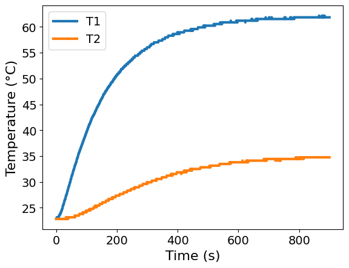
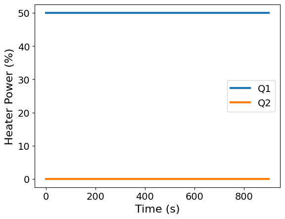
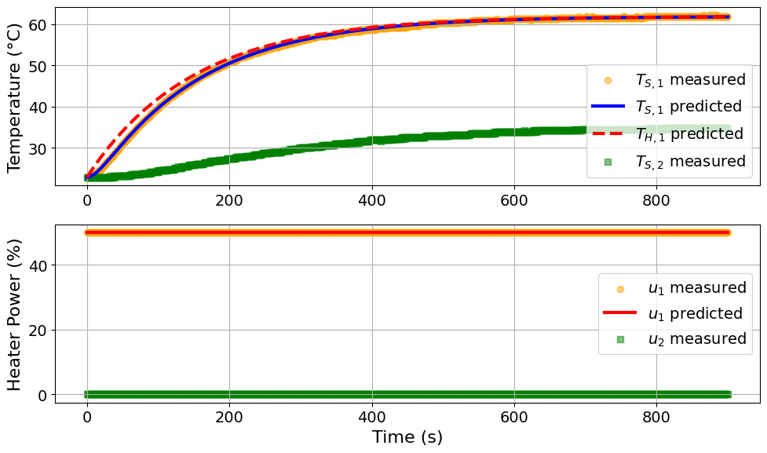

Exercise: ParmEst#
In this exercise, you will practice using ParmEst to estimate four parameters (\(U_a\), \(U_b\), \(C_p^H\), \(C_p^S\)) in the TCLab model using the step test data. We previously estimated these parameters using the sine test data.
import sys
# If running on Google Colab, install Pyomo and Ipopt via IDAES
on_colab = "google.colab" in sys.modules
if on_colab:
!wget "https://raw.githubusercontent.com/dowlinglab/pyomo-doe/main/notebooks/tclab_pyomo.py"
else:
import os
if "exercise_solutions" in os.getcwd():
# Add the "notebooks" folder to the path
# This is needed for running the solutions from a separate folder
# You only need this if you run locally
sys.path.append('../notebooks')
# import TCLab model, simulation, and data analysis functions
from tclab_pyomo import (
TC_Lab_data,
TC_Lab_experiment,
extract_results,
extract_plot_results,
)
# set default number of states in the TCLab model
number_tclab_states = 2
Load and explore experimental data (step test)#
import pandas as pd
if on_colab:
file = "https://raw.githubusercontent.com/dowlinglab/pyomo-doe/main/data/tclab_step_test.csv"
else:
file = '../data/tclab_step_test.csv'
df = pd.read_csv(file)
df.head()
| Time | T1 | T2 | Q1 | Q2 | |
|---|---|---|---|---|---|
| 0 | 0.00 | 22.84 | 22.84 | 50.0 | 0.0 |
| 1 | 1.00 | 22.84 | 22.84 | 50.0 | 0.0 |
| 2 | 2.01 | 23.16 | 22.84 | 50.0 | 0.0 |
| 3 | 3.02 | 22.84 | 22.84 | 50.0 | 0.0 |
| 4 | 4.01 | 22.84 | 22.84 | 50.0 | 0.0 |
Make two plots to visualize the temperature and heat power data as a function of time.
### BEGIN SOLUTION
ax = df.plot(x='Time', y=['T1', 'T2'], xlabel='Time (s)', ylabel='Temperature (°C)')
### END SOLUTION

### BEGIN SOLUTION
ax = df.plot(x='Time', y=['Q1', 'Q2'], xlabel='Time (s)', ylabel='Heater Power (%)')
### END SOLUTION

We’ll now store the data in this custom data class objective. This is a nice trick to help keep data organized, but it is NOT required to use ParmEst or Pyomo data. Alternatively, we could just use a pandas DataFrame.
tc_data = TC_Lab_data(
name="Step Test for Heater 1",
time=df['Time'].values,
T1=df['T1'].values,
u1=df['Q1'].values,
P1=200,
TS1_data=None,
T2=df['T2'].values,
u2=df['Q2'].values,
P2=200,
TS2_data=None,
Tamb=df['T1'].values[0],
)
Our custom data class has a method to export the data as a Pandas Data Frame.
tc_data.to_data_frame().head()
| time | T1 | u1 | P1 | TS1_data | T2 | u2 | P2 | TS2_data | Tamb | |
|---|---|---|---|---|---|---|---|---|---|---|
| 0 | 0.00 | 22.84 | 50.0 | 200 | None | 22.84 | 0.0 | 200 | None | 22.84 |
| 1 | 1.00 | 22.84 | 50.0 | 200 | None | 22.84 | 0.0 | 200 | None | 22.84 |
| 2 | 2.01 | 23.16 | 50.0 | 200 | None | 22.84 | 0.0 | 200 | None | 22.84 |
| 3 | 3.02 | 22.84 | 50.0 | 200 | None | 22.84 | 0.0 | 200 | None | 22.84 |
| 4 | 4.01 | 22.84 | 50.0 | 200 | None | 22.84 | 0.0 | 200 | None | 22.84 |
Parameter estimation with ParmEst#
Now for the main event: performing nonlinear least squares with ParmEst.
import pyomo.contrib.parmest.parmest as parmest
# First, we define an Experiment object within parmest
### BEGIN SOLUTION
TC_Lab_sine_exp = TC_Lab_experiment(data=tc_data, number_of_states=number_tclab_states)
### END SOLUTION
# Since everything has been labeled properly in the Experiment object, we simply invoke
# parmest's Estimator function to estimate the parameters.
### BEGIN SOLUTION
pest = parmest.Estimator([TC_Lab_sine_exp, ], obj_function='SSE', tee=True)
obj, theta = pest.theta_est()
### END SOLUTION
Ipopt 3.13.2:
******************************************************************************
This program contains Ipopt, a library for large-scale nonlinear optimization.
Ipopt is released as open source code under the Eclipse Public License (EPL).
For more information visit http://projects.coin-or.org/Ipopt
This version of Ipopt was compiled from source code available at
https://github.com/IDAES/Ipopt as part of the Institute for the Design of
Advanced Energy Systems Process Systems Engineering Framework (IDAES PSE
Framework) Copyright (c) 2018-2019. See https://github.com/IDAES/idaes-pse.
This version of Ipopt was compiled using HSL, a collection of Fortran codes
for large-scale scientific computation. All technical papers, sales and
publicity material resulting from use of the HSL codes within IPOPT must
contain the following acknowledgement:
HSL, a collection of Fortran codes for large-scale scientific
computation. See http://www.hsl.rl.ac.uk.
******************************************************************************
This is Ipopt version 3.13.2, running with linear solver ma27.
Number of nonzeros in equality constraint Jacobian...: 15301
Number of nonzeros in inequality constraint Jacobian.: 0
Number of nonzeros in Lagrangian Hessian.............: 7203
Total number of variables............................: 3606
variables with only lower bounds: 0
variables with lower and upper bounds: 1804
variables with only upper bounds: 0
Total number of equality constraints.................: 3602
Total number of inequality constraints...............: 0
inequality constraints with only lower bounds: 0
inequality constraints with lower and upper bounds: 0
inequality constraints with only upper bounds: 0
iter objective inf_pr inf_du lg(mu) ||d|| lg(rg) alpha_du alpha_pr ls
0 5.1436530e+04 2.32e-01 1.31e+01 -1.0 0.00e+00 - 0.00e+00 0.00e+00 0
1 1.5532093e+02 3.70e-02 1.52e+04 -1.0 8.79e+00 - 8.50e-01 1.00e+00f 1
2 1.6227889e+02 2.30e-03 8.55e+03 -1.0 5.40e-01 2.0 9.90e-01 1.00e+00h 1
3 3.7562775e+01 1.39e-03 4.30e+03 -1.0 4.74e-01 - 9.90e-01 1.00e+00f 1
4 2.2919842e+01 1.98e-01 7.58e+02 -1.0 3.43e+00 - 9.97e-01 8.72e-01f 1
5 2.4039376e+01 2.58e-03 1.26e+03 -1.0 5.10e-02 1.5 1.00e+00 1.00e+00h 1
6 2.2841812e+01 2.56e-04 1.63e+02 -1.0 8.78e-02 - 1.00e+00 1.00e+00f 1
7 2.2804825e+01 2.50e-05 1.15e+01 -1.0 2.53e-02 - 1.00e+00 1.00e+00h 1
8 2.2806558e+01 9.64e-10 1.47e-03 -1.0 1.32e-04 1.0 1.00e+00 1.00e+00h 1
9 2.2802018e+01 7.47e-06 4.57e-02 -2.5 3.52e-02 - 1.00e+00 1.00e+00f 1
iter objective inf_pr inf_du lg(mu) ||d|| lg(rg) alpha_du alpha_pr ls
10 2.2802049e+01 8.05e-12 2.04e-05 -2.5 5.50e-06 0.6 1.00e+00 1.00e+00h 1
11 2.2802045e+01 4.14e-05 3.63e-03 -3.8 9.58e-02 - 1.00e+00 1.00e+00h 1
12 2.2802045e+01 9.14e-05 2.48e-02 -3.8 9.18e+00 - 9.83e-01 1.17e-02h 7
13 2.2802048e+01 2.02e-05 1.84e-03 -3.8 3.67e-01 - 1.00e+00 1.00e+00H 1
14 2.2802047e+01 5.87e-10 2.29e-04 -3.8 8.33e-05 0.1 1.00e+00 1.00e+00h 1
15 2.2802046e+01 4.49e-10 4.57e-05 -5.7 1.11e-04 -0.4 1.00e+00 1.00e+00h 1
16 2.2802045e+01 1.77e-10 1.10e-05 -5.7 7.98e-05 -0.9 1.00e+00 1.00e+00h 1
17 2.2802045e+01 1.33e-11 1.04e-06 -8.6 2.28e-05 -1.3 1.00e+00 1.00e+00h 1
18 2.2802045e+01 1.36e-13 3.54e-08 -8.6 2.32e-06 -1.8 1.00e+00 1.00e+00h 1
19 2.2802045e+01 1.59e-14 4.01e-10 -8.6 7.89e-08 -2.3 1.00e+00 1.00e+00h 1
Number of Iterations....: 19
(scaled) (unscaled)
Objective...............: 2.2802045378652373e+01 2.2802045378652373e+01
Dual infeasibility......: 4.0072241098023035e-10 4.0072241098023035e-10
Constraint violation....: 1.5855372570428017e-14 1.5855372570428017e-14
Complementarity.........: 2.5059035596800626e-09 2.5059035596800626e-09
Overall NLP error.......: 2.5059035596800626e-09 2.5059035596800626e-09
Number of objective function evaluations = 30
Number of objective gradient evaluations = 20
Number of equality constraint evaluations = 30
Number of inequality constraint evaluations = 0
Number of equality constraint Jacobian evaluations = 20
Number of inequality constraint Jacobian evaluations = 0
Number of Lagrangian Hessian evaluations = 19
Total CPU secs in IPOPT (w/o function evaluations) = 0.201
Total CPU secs in NLP function evaluations = 0.006
EXIT: Optimal Solution Found.
parmest_regression_results = extract_plot_results(
tc_data, pest.ef_instance
)

Model parameters:
Ua = 0.041 Watts/degC
Ub = 0.0091 Watts/degC
CpH = 5.9527 Joules/degC
CpS = 0.1387 Joules/degC
Discussion: How do these results compare to our previous analysis?